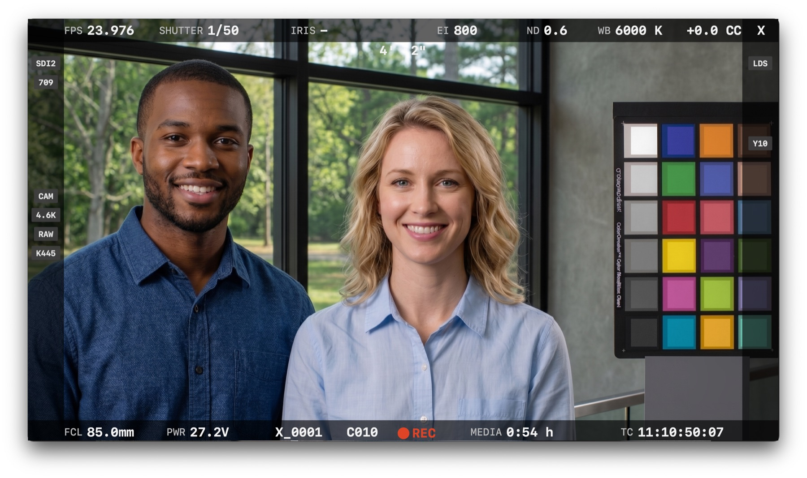
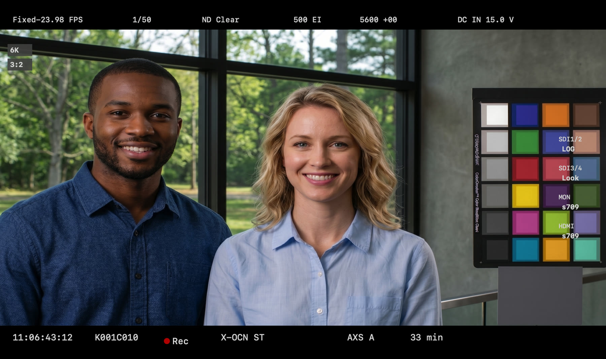

SDI キャプチャ&インジェストを、現場の速度で。REC フラグ追従・画面上の REC 表示の視覚検知・無線トリガーの三段構えで収録を自動化し、テイクはそのまま Premiere Pro のビンへ。Media Express の置き換えとして設計した、現場編集のための macOS アプリです。


Auto Rec
カメラの REC に .Capture が追従します。経路や機種に合わせて三つの方式を選べるので、フラグが載らない現場でも取りこぼしません。
SDI の VANC に載るカメラの収録フラグを読んで開始・停止。VENICE などフラグ対応カメラで最も確実な方式です。
モニタ映像上の REC インジケータの色変化を検知。Find REC ● がワンクリックで位置と点灯色を自動登録し、現場 LUT で赤がずれていても追従します。ALEXA 35 / Mini / AMIRA / VENICE / BURANO / Ronin 4D のプリセット内蔵。
USB 接続の Bridge 子機(M5Stack)が受けた REC 信号に追従。DIT ベースの収録開始を、オフラインの Mac まで無線で届けます。
Premiere Pro
同梱の CEP パネル「.Capture Sync」が、確定したテイクをプロジェクト名のビンへ自動インポート。編集は次のカットを待つだけです。
Spec